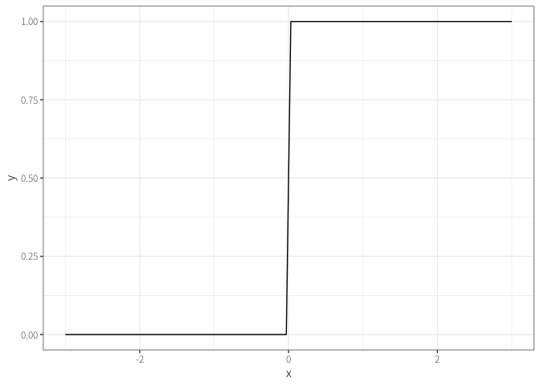

人工知能のための機械学習
技術政策学（データ科学編）
はじめに
警告
日進月歩の分野なので、本章の内容はすぐに古いものになる（or既にそうであるかもしれない）点に注意。
ビッグデータは魅力的な資源（材料）だが、有効な利用法（調理法）があって初めて価値を持つ。
\(\leadsto\)近年のデータ科学における2つの変革
- 機械学習：データから一定のパターンを機械（パソコン）が学習し、予測をする。
- 因果推論：データから因果関係（因果効果）を学習する。
\(\leadsto\)いわゆる（最近において）人工知能と呼ばれるものは機械学習（予測）
- 現在は第3次人工知能ブームと言われている。
- クオリティが高いがゆえに、あたかも機械が人間のように思考しているように見えてしまう。
- 自然言語処理に関するタスクSuperGLUEでは人間を越えている。
生成 (generative) AI：ある情報から、別の情報を出力するモデル
- 大規模言語モデル (large language model: LLM)：大量のテキストを使い、巨大なモデルを学習した生成AIで代表的なものにChatGPT、Google Bard、Microsoft Bing AIなどがある。
- まずは、OpenAIのPlaygroundで遊んでみよう。
- 画像生成の性能が向上しDALL·E 2 、midjourney 、stable difffusion などがある。
生成モデルも実は予測の組み合わせである。
- DeepL\(\leadsto\)ある言語の文章から他の言語の文章を予測する。
- チャットbot、文書要約、コード生成\(\leadsto\)ある文章から返答、要約、次に来る文章を予測する。
- AmazonやNetflixの推薦\(\leadsto\)これまでの購入履歴やウォッチリストから次に購入する商品を予測する。
- 学習過程にテキストデータを含めることで、テキストから画像生成できる (vision and language) 。
代表的な機械学習の分類
- 教師あり学習：特徴量 (feature) から対象を予測する。
- 教師なし学習：多様な特徴量から重要なものを抽出する。
- 強化学習：フィードバックを通じて最適な方策 (policy) を発見する。
\(\leadsto\)これらの概要を理解し、生成AIが何をしているかを理解する。
1 教師あり学習
教師あり学習とは、機械に人間の判断のパターンを学習させ、模倣できるようにすること。
\(\leadsto\)言い換えれば、予測 (prediction) というタスクを実行できるように訓練する。
- 写真とその内容のペアのデータを機械に覚えさせる。
- 住宅の情報（間取り、最寄り駅までの距離……etc）と価格を機械に覚えさせる。

\(\leadsto\)ある情報を入力すると、それに対応する情報を出力する。
- 入力情報に対応する出力（正解）を人間が判断するアノテーションが重要になる。
1.1 回帰分析
シンプルで、広く使われている教師あり学習の手法として回帰分析 (regression analysis) がある。
- 例えば、北海道の中古マンション価格の教師あり学習を行ってみる。
\[ 価格 = 335.58 + 11.84 \times 広さ \]
最小二乗法 (ordinary least squares: OLS) はデータとの誤差が最も小さくなる直線を計算する。
- 予測値を一次関数（直線）で予測する。
\[ i\textrm{の予測値} = \hat{y}_i = \underbrace{\hat{\alpha}}_{\textrm{切片 (intercept)}} + \underbrace{\hat{\beta}}_{\textrm{傾き (slope)}} x_i \]
- 上手く予測できるような\(\hat{\alpha}, \hat{\beta}\)をデータから求める（学習する）。
- 真の値と予測値のズレ、誤差 (error) が小さい方がいいはず。
\[ i\textrm{の予測誤差} = i\textrm{の真の値} - i\textrm{の予測値} = y_i - \hat{y}_i \]
- ズレはプラスにもマイナスにもなるので、プラスの値しか取らない距離や面積に変換する。
- 通常は誤差を二乗して、面積にする。
\[ i\textrm{の予測誤差の二乗} = i\textrm{の真の値} - i\textrm{の予測値} = (y_i - \hat{y}_i)^2 \]
- 個々の誤差をデータ全体について計算し、合計する。
\[ i\textrm{の予測誤差の二乗の合計} = (y_1 - \hat{y}_1)^2 + (y_2 - \hat{y}_2)^2 + \cdots \]
\(\leadsto\)これを最小にする\(\hat{\alpha}, \hat{\beta}\)をデータから求める！（パソコンが計算してくれる）1
1 最適化（偏微分係数が0となる値を求める）によって明示的に解くことができる。
- \(\hat{\alpha}, \hat{\beta}\)は\(\hat{y}_i\)の中に入っていることに注意。
予測に使う情報（特徴量）は1つである必要はない。
\[ 価格 = 396.27 + 12.50 \times 広さ -10.57 \times 距離 \]
- パターンを学習しているだけであり、機械がマンションについて理解しているわけではない。
予測対象がカテゴリーの場合はどうするのか？
- 機械学習の代表的なデータセットにタイタニック号の乗客データがある。
- このときの予測対象は乗客が生存したかどうかというカテゴリー
\(\leadsto\)ロジスティック関数（シグモイド関数）を使って変形すると、0から1の間に収まる。

1.2 決定木
回帰分析以外の代表的な教師あり学習の手法として決定木 (decision tree) がある。

\(\leadsto\)弱い決定木をたくさん集めたランダム・フォレスト（やその発展形2）がよく使われている。
2 XGBoostやLightGBMなど。
- 三人寄れば文殊の知恵？ 陪審定理？
1.3 深層学習
深層学習 (deep learning) は深層ニューラル・ネットワーク (deep neural network: DNN) とも呼ばれる。
\(\leadsto\)もともとは人間のニューロンをマシン上で再現すれば人工知能ができるかもという期待
- 閾値を超えると発火して信号を送信する。

\(\leadsto\)回帰分析をニューロンとして見て3、これをたくさん作る。
3 厳密に言えば、活性化関数を挟む。


なぜ深層学習はすごいのか？
- 隠れ層を増やせば増やすほど柔軟な予測ができる。
- 隠れ層の数\(\approx\)モデルのサイズ
- 特徴量を人間が作らなくてよい。
- むしろ、重要な特徴量がなにかを学習する（表現学習）。
- 学習済みモデルを使える。
- 必要に応じて出力側を再学習（ファイン・チューニング）する。
- 様々な形式のデータ（テキスト、画像、音声……）を同じ枠組みで分析できる。
- vision and languageなどマルチモーダルなモデルの開発
\(\leadsto\)LLMは与えられた単語の列から、次に来そうな、もっともらしい単語を予測している（だけ）！

- 同じ入力に対して同じ回答をしないように、ある程度ランダムに予測をしている。
- GPTにおけるtemparatureはランダム度合いを指定している。
- 人工知能の獲得か？（例、中国語の部屋）
1.4 プロンプト・エンジニアリング
ChatGPTなどの最近のLLMがすごいのは、タスクも指示するだけでよいこと。
- 翻訳、要約、質疑応答などのタスクごとにモデルを作らなくて良い。
\(\leadsto\)入力する指示文（プロンプト）をどのようにするのかが重要。
- プロンプトの書き方を工夫することをプロンプト・エンジニアリングなどと呼ぶ。
- いくつかの具体例を提示すると、性能が良くなる、安定するfew shot learningという現象（？）